OSReward：跨平台计算机使用奖励模型的标准化评测
OSReward 的主题不是再造一个会点击界面的智能体，而是追问一个更基础的问题：当计算机使用智能体（Computer-Using Agent，CUA）的轨迹被交给视觉语言模型判定成功或失败时，这个判定本身究竟有多可信。论文由香港大学 Qiushi Sun 等人牵头，合作机构包括南京大学、新加坡国立大学、中国科学技术大学、西安交通大学、牛津大学和复旦大学，于 2026 年 7 月 30 日公开。论文入口为 arXiv:2607.28609；官方项目页 已核验，项目已列出 benchmark、OS-Shepherd-100K、9B/35B 模型和评测代码资源。论文目前标注为 work in progress，因此这里把已经公开的实验作为当前版本证据，而不把后续资源状态或结论稳定性想当然。
计算机使用智能体的评测、数据筛选和强化学习都依赖一个可扩展的轨迹完成度判定器，但人工规则与人工标注无法覆盖海量、长链路、跨平台轨迹；领域已经大量依赖 VLM 充当 judge，却一直缺少对这些 judge 是否可靠、是否系统性误奖失败轨迹的标准化检验。
1. 背景和问题
一条 CUA 轨迹不是普通问答的最终响应，而是任务指令、连续屏幕状态、模型思考和动作的交错序列。判断它是否完成任务，需要验证环境是否真的到达目标状态，而不是检查模型最后是否说了“已经完成”。这个区别决定了 reward 的可信度：离线评测用它计算成功率，数据生产用它筛掉失败轨迹，拒绝采样和强化学习又把它作为优化方向。若 judge 把失败误标成成功，错误不会止于一个评测分数，而会进入训练数据和策略更新，形成直接奖励错误行为的反馈回路。
传统方案有两条。其一是为每个任务编写可执行 verifier，它在 WebArena、OSWorld 一类可控 benchmark 上很有效，却只能覆盖事先设计好的任务；面对静态历史轨迹、开放式任务或已经不存在的现场环境，它往往无从执行。其二是让人逐条看完整轨迹，但长达数十乃至一百步的屏幕、动作和思考使成本快速上升，不能承担训练阶段数万到数百万次调用。VLM-as-a-Judge 因而成为事实上的折中方案：它足够通用，也可以批量调用。然而，通用并不等于可靠，尤其当证据跨越多个应用、平台和很长的时间轴时。
已有 CUA reward 工作还存在一个归因困难。若直接拿现成 benchmark 的 rollout 与规则 verifier 标签评测 judge，一次不一致可能来自 judge，也可能来自原任务含糊、环境异常、轨迹采集质量或 verifier 本身的误报。论文在引言中给出的先导观察很尖锐：即便强 VLM judge，在既有 desktop benchmark 上也会与其 verifier 对约四分之一的 verdict 产生分歧。没有从环境、指令、执行到人工金标都受控的数据，就无法知道这个差异究竟在测谁。
OSReward 因此把研究对象从“agent 会不会完成任务”换成“judge 会不会判断 agent 完成任务”。作者新建跨 Web、Windows、Ubuntu、Mobile 的采集基础设施，让多种 agent backbone 执行经人类核验的真实指令，再对完整轨迹做多人标注。这个设计形成三层问题：Full set 测总体可靠性，Hard set 集中放大容易被误判的轨迹，Multi set 进一步问成功轨迹是否对齐意图、是否高效。随后，论文不是停在诊断，而是把诊断出的宽松偏置转化为训练目标，发布 OS-Shepherd-100K 和 9B/35B 奖励模型。
这项工作的工程价值在于，它把一个常被隐藏在训练流水线里的组件独立拉出来验收。一个总体 accuracy 看似接近 90% 的 judge，可能只是在成功样本上很会“点头”，在真正需要拒绝失败轨迹时表现很差。对 reward model 来说，success recall 与 fail recall 的方向比单个平均数更重要；对需要持续生成行为数据的 Agent 系统来说，假阳性尤其危险，因为它会把未完成、误操作或自我叙述包装成正例。OSReward 的核心贡献正是为这种错误方向提供标准化坐标。
对 Agent 工程，直接启发是把 reward 验收从单一 accuracy 改为 success/fail 两类 recall、困难集与单样本稳定性三组门槛，并保存可观察的完成证据。对推荐系统和个性化智能体也有迁移价值：当 LLM 负责浏览内容、调用工具、生成解释或执行运营任务时，离线数据筛选同样会受到“模型自述成功”污染；构造困难负例、保留操作证据、按高一致性选择样本，比让多个同质模型多数投票更可靠。若把 reward 用于推荐策略 RL，还应把误奖失败动作与误拒有效探索的代价分开建模，而不是优化一个混合成功率。
要证明一个轨迹 judge 可用于训练，至少需要同时回答四个问题：它在不同平台和动作空间上是否保持同一判定标准；在失败占比提高、轨迹更长且最终状态不明显时是否仍能抓住错误；同一输入重复运行时标签是否稳定；每次判定的成本能否乘上训练调用量后仍可承受。过去的工作常只报告普通测试集上的平均分，容易把类别基率、错误方向、采样噪声和价格折叠成一个数。OSReward 把 Full、Hard、Multi、输入消融、重采样和成本放在同一协议下，才使“可靠 reward”成为可以分项审计的系统属性。
更重要的是，这些维度彼此不能替代：Full 分数高无法证明 Hard 不崩塌，聚合分数稳定无法证明单轨迹标签不翻转，低调用价也无法补偿假成功被持续写回训练集。只有把金标质量、错误方向、样本级鲁棒性与总训练成本一起报告，reward model 才能从方便的自动打分器变成有边界、有故障模式、可设置发布门槛的基础设施。
2. 方法
2.1 OSReward 的跨平台轨迹构建
OSReward 首先建立真实化环境，而不是复用一批来源不明的旧轨迹。Web 任务在实时网站上执行；Windows、Ubuntu 和 Mobile 环境预装日常与专业应用，并写入用户资料、真实文件、应用数据库、历史记录和干扰内容。Ubuntu 同时覆盖纯 GUI 与 GUI+CLI 两类动作空间，desktop 任务可以长到一百步。标注者先探索环境，再撰写 grounded、可回答但不必能被规则验证的任务，其他标注者交叉检查含糊、无依据或无法执行的候选。约 1500 个候选指令最终约 800 个进入执行阶段。
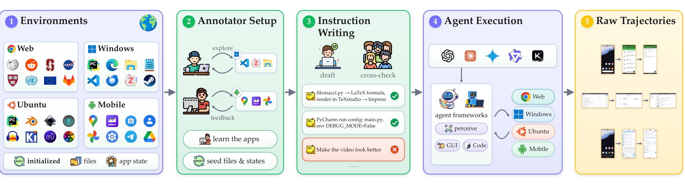
Figure 3 把这条数据链拆成五段。第一段不是空白虚拟机，而是 Web、Windows、Ubuntu、Mobile 上已经初始化的文件、账户和应用状态；第二段让标注者亲自探索和补充环境，因此指令建立在可见功能之上；第三段通过 draft 与 cross-check 排除不落地任务；第四段让 Claude、Gemini、Kimi、Qwen 四类 backbone 经不同 agent framework 执行；第五段保留屏幕、思考和动作组成的原始轨迹。输入的多样性来自平台、环境状态、指令和 agent 风格四个维度，输出则同时包含真实成功与真实失败，而不是人为拼出的负样本。 这使错误 verdict 更可能归因于 judge，而不是旧 benchmark 的采集噪声。
2.2 三阶段人工金标与三种 benchmark 视图
原始轨迹先经过自动预过滤，删除持续反爬、网络故障、冻结等收集事故，避免把“环境坏了”混同“agent 失败”。每条剩余轨迹由三名标注者独立阅读完整多模态上下文并给出 verdict。论文采用一条刻意严格的规则：如果 agent 没有通过环境取得或验证答案，即使碰巧说对，也仍然判失败。三人一致时直接定案；有分歧时，两名资深 reviewer 共同复核并给出结论，而不是简单多数投票；仍有残余质量问题的轨迹被丢弃。三人标注、元审和 Hard 再核验合计约 800 人时。
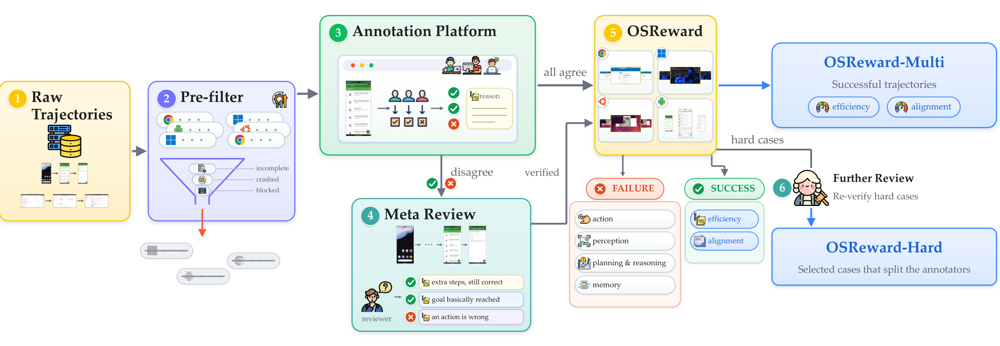
Figure 4 显示金标并非只有一个 SUCCESS/FAIL。失败轨迹还标注 action、perception、planning and reasoning、memory 等多标签错误类型；成功轨迹再给 efficiency 和 alignment 等级。最终同一套人工金标可以按三种方式读取：OSReward Full 保留四平台广度；OSReward-Hard 主要从曾让标注者分歧的轨迹中抽取，并再次审核，集中暴露“看起来像完成”的难例；OSReward-Multi 只在成功轨迹上评价动作是否符合任务意图、步骤是否浪费。训练语料与评测金标严格分开：OSReward 用人工结论测 judge，OS-Shepherd-100K 则通过后续自动筛选构造，不能用后者反向污染前者。
2.3 统一 VLM judge 协议与指标
27 个 reference judge 使用同一协议：默认读取最后 $N=5$ 个状态与逐步 reasoning/action 文本，采用固定 prompt、无任务工具、无 step-level supervision，以 greedy decoding 输出 SUCCESS/FAIL；Multi 样本还输出 alignment 与 efficiency 等级。统一接口把差异尽量收缩到 judge 本身。
原论文没有编号的模型结构、损失函数或 GRPO 推导公式；它是一篇经验性 benchmark 与训练报告，可复用的数学内容主要是指标定义。以下公式是对论文自然语言定义的等价写法，而不是额外提出的新目标。首先，成功召回与失败召回分别度量两种真实类别：
符号解释：$y$ 是人工金标，$\hat y$ 是 judge verdict，$N_{\mathrm{SUCCESS}}$ 与 $N_{\mathrm{FAIL}}$ 是两类真实轨迹数。sRec 低表示过严，fRec 低表示过宽松。Hard set 的失败比例达到 70%，因此只看 raw accuracy 会奖励“总是判 FAIL”的策略；论文用二者均值消除类别基率影响：
符号解释：BalAcc 让成功与失败两类各占一半权重。一个在 Hard 上永远判失败的常量分类器 raw accuracy 约 70%，但 sRec 为 0、fRec 为 1，BalAcc 只有 50%，因此不会伪装成可靠 judge。
Multi 的 alignment/efficiency 类别不平衡，故用宏召回等权处理每个等级：
符号解释：$C$ 是评分等级数，$\mathrm{Recall}_c$ 是第 $c$ 级被正确输出的比例。论文同时报告 pairwise ranking AUC，并列计 0.5：
符号解释：$x^+$ 的人工等级高于 $x^-$，$s(\cdot)$ 是 judge 连续或有序评分。AUC 高而 macro-recall 低，意味着模型大体知道谁更好，却没有校准好把连续判断映射到具体等级的阈值。
2.4 OS-Shepherd-100K 与两阶段去偏训练
作者把自采轨迹与 OpenCUA、OpenMobile、ScaleCUA、少量 OS-Genesis 组成训练池。多个强 judge 在不同截图设置下产出约 321K judge instances。强模型会在同一难例上共错，所以作者不用多数票修正 verdict，而是在数据筛选时放弃不确定项：只有高一致、且最强 judge 无异议的轨迹进入语料，每个样本携带与标签一致的 reasoning。
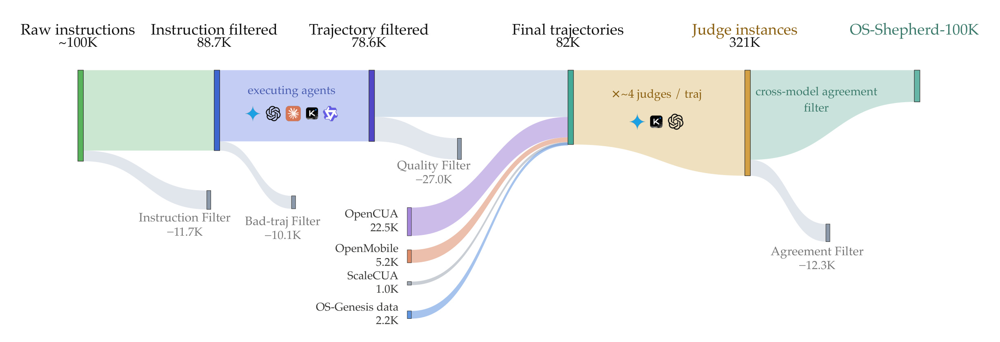
Figure 10 需要注意单位变化：左半段按 instruction/trajectory 计数，约 100K 原始指令经过 11.7K 指令过滤和 10.1K 坏轨迹过滤，再与公开来源汇入约 82K final trajectories；随后每条轨迹由约四个 judge 处理，形成约 321K judge instances。agreement filter 丢弃约 12.3K 低一致性轨迹，约 85% 被 judge 的轨迹留下；由于同一轨迹最多可贡献两种输出格式，最终训练样本约 96.6K。这里的 ensemble 用于决定“这条数据值不值得训练”，不是用多数票强行把每条轨迹变成可信 gold。 这种选择性比简单扩大 judge 数量更符合前文观察到的相关错误结构。
训练从 Qwen3.5-9B/35B-A3B 初始化，先用 96.6K 筛选样本做 SFT，学习统一 judge 协议和带推理 verdict。SFT 剩余的主要错误仍是假成功；因重复采样偶尔能判对，作者认为能力尚在，遂挖出 false-success 难例做短 GRPO，把 operating point 从“几乎全接收”推向平衡。RL 只在训练中存在，推理仍是轨迹到 verdict 的一次生成。
论文没有公布一个可在此复用的独立 RL loss 公式，但给出训练规模的调用量算式。一个 200 次更新、batch 16、每个输入 16 条 rollout 的在线 RL 过程会产生：
符号解释：$U$ 为更新次数，$B$ 为 batch size，$R$ 为每条输入的 rollout 数。这解释了为什么每条轨迹几十美分的 frontier judge 仍不可用：reward 调用量会被训练循环成倍放大，而可自托管的 9B judge 才可能进入每步训练。
3. 实验结果
3.1 数据构成与主结果上限
Full 有 1,019 条轨迹，成功/失败为 43%/57%；Hard 有 284 条，比例为 30%/70%；Multi 为 440 条成功轨迹增加 alignment 与 efficiency 标签。四平台同时覆盖 GUI-only 与 GUI+CLI，且失败轨迹明显更长。
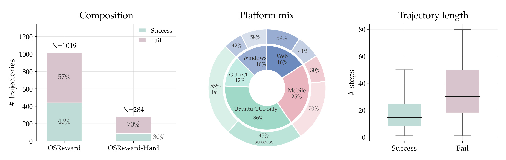
Figure 5 左图说明 Full 并非靠多数类就能得到高分，而 Hard 刻意提高失败比例来压力测试假成功；中图显示 Windows、Web、Mobile 与 Ubuntu 两种动作空间都进入样本，避免评测退化为单平台协议；右图中失败轨迹的步数中位数和长尾都高于成功轨迹。这个长度差异是后续结论的重要混杂因素：judge 默认只看最后五个状态，长任务的关键失败可能早已离开可见窗口，即便保留文字历史也不等于保留完整环境证据。
27 个 judge 的 Full accuracy 为 69.4%-89.7%；Claude-Opus-4-8 最高 89.7%，GPT-5.5 与 Claude-Opus-4-6 均为 89.5%。Hard 令所有模型下降 20-43pp，最佳 raw accuracy 仅 69.7%、均值约 52%。Hard 恰有 70% 失败，故 69.7% 接近“全部判失败”，必须结合两类 recall 与 BalAcc。
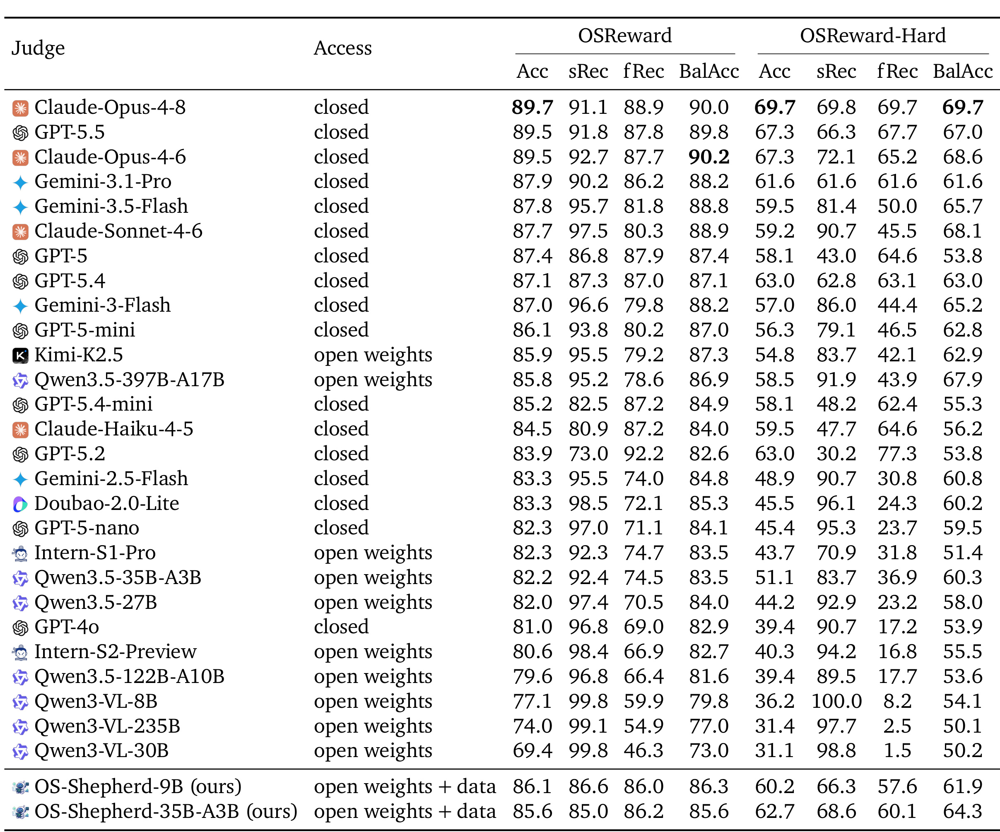
Table 1 的价值不只是找最高分，而是辨别相同 Acc 背后的错误方向。例如 Qwen3-VL-30B 在 Full 上 sRec 99.8、fRec 46.3，几乎接受所有成功，也放过大量失败；到 Hard，sRec 98.8、fRec 1.5，表现近乎“总是成功”。相反，GPT-5.2 更严格，Hard 的 sRec 30.2、fRec 77.3。Claude-Opus-4-8 在 Hard 两类 recall 均为 69.7，GPT-5.5 为 66.3/67.7，才属于较平衡的 frontier。OS-Shepherd-9B 的 Full Acc 86.1、Hard Acc 60.2，低于最佳闭源模型，但 Hard fRec 57.6，明显避开低价模型的宽松极端。
3.2 宽松偏置、Hard 崩塌与细粒度评分
横轴 fRec、纵轴 sRec 构成 strict-lenient 平面：点靠左表示漏掉失败、偏宽松，点靠下表示拒绝成功、偏严格。Hard 上点云进一步向低 fRec 移动。“未完成却被接受”约占全部错误三分之二，是每个模型族的首要错误；over-accept 总量超过 over-reject 三倍，强模型中也约两倍。
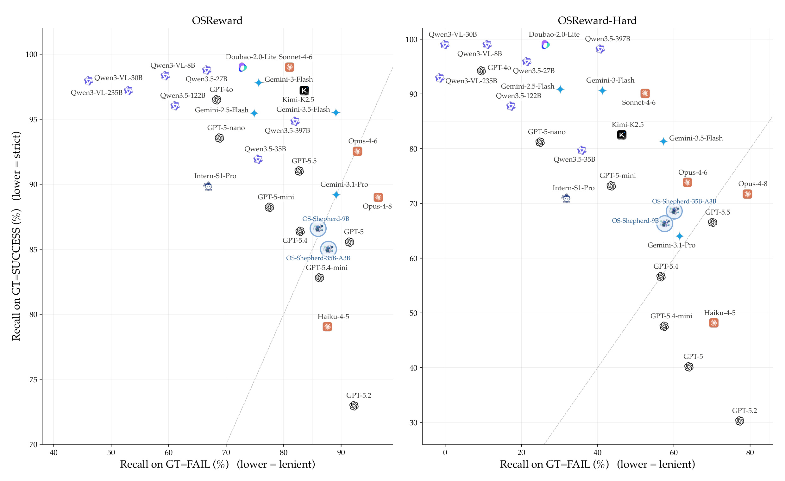
Figure 6 左图中不少模型拥有 95% 以上 sRec，却用很低的 fRec 换来这一数字；这不是“对成功更敏感”的无害风格，而是 reward 会持续接收失败轨迹。右图显示 Hard 不是等比例降分：Qwen3-VL 和若干便宜模型仍在顶端维持近乎 100% sRec，但 fRec 掉到 0-20%；OS-Shepherd 两个点则落在 60% 左右的平衡区域。论文还报告 Windows 是 Hard 中最难平台，mean judge accuracy 42.4%，Mobile 为 58.3%；perception 与 action 错误比 planning/reasoning 错误更难发现，和 judge 依赖文本而非屏幕的后续消融一致。
Multi 显示能判成败不等于能评质量：最佳 macro-recall 仅 63.5、AUC 66.7。alignment 尤其难，模型常默认最高等级；efficiency 更容易从冗余步骤判断。AUC 高于 macro-recall，说明排序信号尚存，但离散阈值失配。
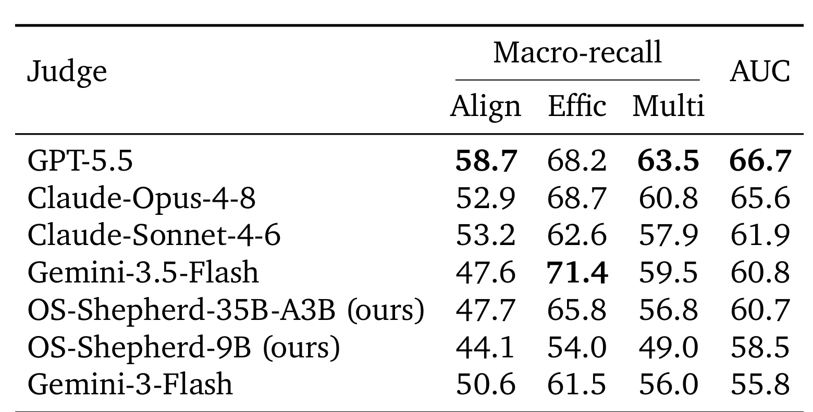
Table 2 中 GPT-5.5 的 alignment macro-recall 58.7、efficiency 68.2、Multi 63.5、AUC 66.7；Claude-Opus-4-8 的 Multi 为 60.8。OS-Shepherd-35B 的 efficiency 65.8，但 alignment 只有 47.7；9B 的 Multi 49.0，接近常量等级的 50% 基线。因而 OS-Shepherd 的优势主要是更会拒绝假成功，而不是已经成为可靠的多维质量评分器。若把它直接用于对成功轨迹做细粒度排序，仍需单独校准，不能从 binary reward 的改善外推。尤其要区分“排序对了”与“分档可直接消费”：前者可服务 pairwise 选择，后者才适合当绝对 reward。
3.3 输入消融、稳定性与同错集成
视觉设置变化很小：最后三帧平均 -0.07pp，第一帧加最后两帧 -0.24pp，去 red click marker 为 +0.32pp。只保留截图、移除 thought/action 文本则平均 -7.29pp，并翻转 22.7% verdict；只去 reasoning 为 -1.78pp、翻转 11.6%。动作文字比显式思考更关键。
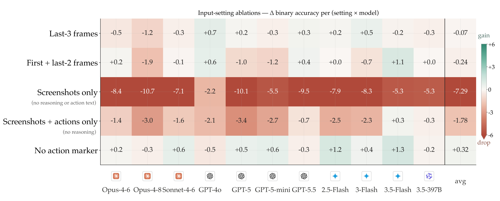
Figure 9 中“Screenshots only”一行对所有模型都是负值，Opus-4-8 达 -10.7pp，GPT-5 为 -10.1pp；视觉帧组合行则在正负一两个点内波动。不能据此得出“视觉不重要”：最后几帧本身可能不足以包含早期关键证据，聚合 accuracy 的稳定也掩盖了单样本 5-7% 的 label flip。更准确的结论是，在论文给定的有限截图协议里，judge 的决定主要被 agent 自己的动作与叙述历史驱动。这正好解释假成功：一个自信的完成声明能够覆盖没有被末帧验证的环境状态。
相同输入在 $T=0.7$ 下重采样会翻转 6-9% verdict；总分稳定不代表单样本 reward 稳定。强 judge 的 pairwise $\kappa$ 约 0.71，常在同一难例上共错。top-3 vote 仅提升约 1pp、成本却倍增；oracle 可达 99.2%，说明答案常在模型池中，但普通投票不知道该信谁。因此训练语料遇到分歧就丢弃，比强行聚合更保守。
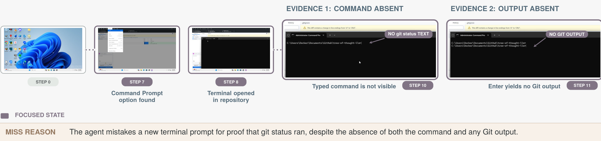
Figure 22 把统计偏置还原为具体错误。任务要求在 GitHub Desktop 中打开终端并执行 git status；轨迹确实打开了终端，却没有显示命令文本，也没有任何 Git 输出。agent 仅因为终端回到提示符便声称命令已执行，人工标签为 FAIL，而 reference judges 多数判 SUCCESS。这里不存在抽象的“视觉细节太难”：两个决定性证据——命令缺席和输出缺席——都可以指出。失败来自 judge 相信 action history 和完成叙述，没有独立要求可观察的环境证据。这类错误进入 RL 后会奖励“说得像做完”，而不是“真的做完”。重裁后的子图只保留五个关键步骤与 miss reason，也更清楚地区分原图固有证据文字和论文正文。
3.4 训练收益、成本与外部分布泛化
OS-Shepherd 的收益集中在抓失败。9B base 的 Full Acc/fRec 为 76.7/59.9，训练后为 86.1/86.0；Hard 从 39.4/14.1 升到 60.2/57.6。35B 的 Hard Acc/fRec 从 51.1/36.9 到 62.7/60.1。35B 仅多 2.4pp Hard BalAcc，说明主要收益来自数据与配方。
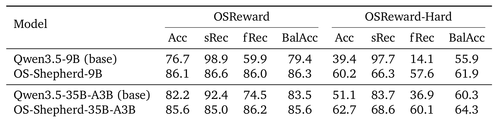
Table 4 也显示去宽松不是免费提升所有指标。9B 的 Hard sRec 从 97.7 降到 66.3，同时 fRec 从 14.1 升到 57.6；模型把 operating point 从几乎全接收移动到较平衡位置，最终 BalAcc 从 55.9 到 61.9。35B 也从 sRec/fRec 83.7/36.9 变为 68.6/60.1。若业务方只看成功召回，会误把这种变化理解为退化；若 reward 的首要风险是假成功，则这是有意的风险再分配。线上部署仍需按误奖失败与误拒成功的成本选择阈值，并在阈值变更后重新核对两类召回，不能用 Full Acc 单独验收。表中的两种模型规模走向相似，进一步削弱了“单纯增大参数就能修复宽松偏置”的解释。
两种模型规模走向相似，也强调专门数据与训练目标才是主要变量。
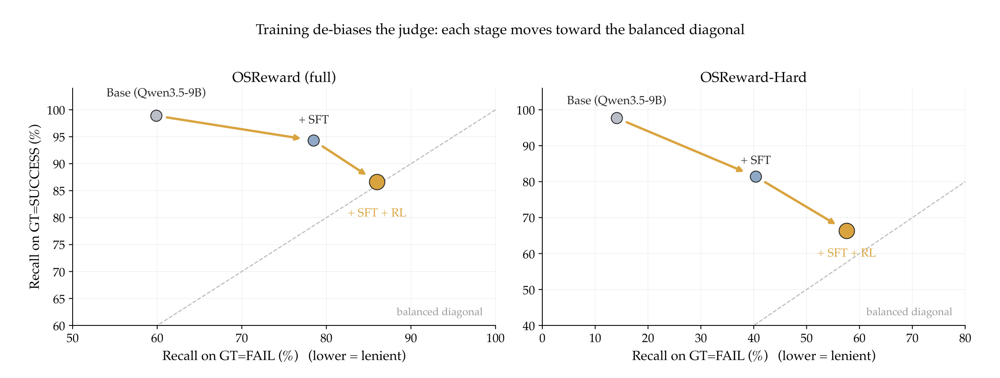
Figure 14 补充了 Table 4 看不到的阶段变化。Full 上 base 位于高 sRec、低 fRec 的宽松端，SFT 已显著向对角线移动，SFT+RL 再向更平衡区域推进；Hard 上这条路径更陡，RL 贡献最大。作者据此认为 false-success 识别能力在 SFT 模型中是潜在的，GRPO 通过挖掘重复采样中偶尔判对的难例把它稳定下来。不过图中只显示 9B 的 operating point，且 RL 难例来自同一类 judge 管线，尚不能证明去偏不会牺牲某些未覆盖成功类型。
成本上，Hard 约 69.7% 的 Claude-Opus-4-8 判完整集约 100 美元，GPT-5.5 约 45 美元；OS-Shepherd-9B 的 API 等价成本约 1.36 美元。51,200 次调用分别约需 4,000、2,300、68 美元，即相对 frontier 低约 30-60 倍；这里是“倍数”，不是“降低 30-60%”。
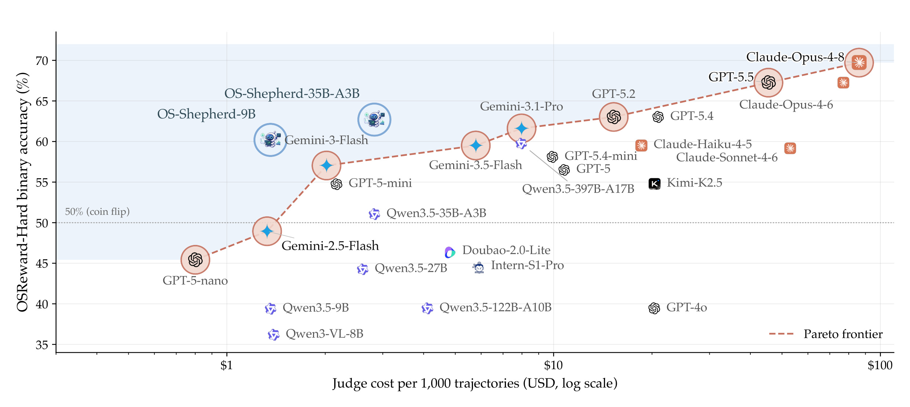
Figure 2 的横轴是每 1,000 条轨迹的对数成本，纵轴是 Hard accuracy。昂贵 frontier 位于右上，廉价通用开源模型多落在左下；OS-Shepherd-9B/35B 位于约 60-63% 的中上区，同时成本接近 1 美元量级。它们没有达到 Opus/GPT-5.5 的绝对准确率，却是低成本区域最接近 Pareto frontier 的点。对训练基础设施而言，这比 Full 上与商业中档模型“同分”更有意义，因为真正拉开模型的是 failure-heavy Hard，而训练成本按调用次数放大。
外部分布评测覆盖 OSWorld、WebArena、AndroidWorld，以各自 human-written verifier 为参照；它测 agreement 而非重新人工核验的 ground truth，差异不能全归因于 judge。平台趋势一致：Mobile 最高、Web 次之、Desktop 最低。OS-Shepherd 是 OSWorld/AndroidWorld 上最强开源 judge 之一，并在 WebArena 位于 frontier cluster。
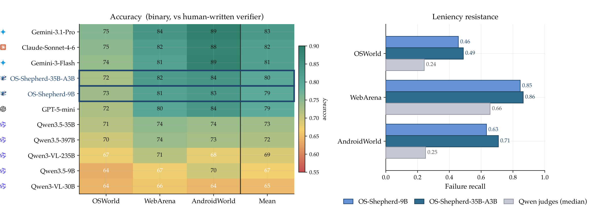
Figure 11 左侧显示 OS-Shepherd-9B 在 OSWorld、WebArena、AndroidWorld 的 agreement 约为 73%、81%、83%，均值 79%；35B 为 72%、82%、84%，均值 80%。右侧更关键：9B failure recall 约 0.46、0.85、0.63，35B 约 0.49、0.86、0.71，而通用 Qwen judge 中位数约为 0.24、0.66、0.25。三个外部 benchmark 的任务和轨迹都未进入训练，说明训练得到的不是对 OSReward 样本 ID 的记忆，而是更倾向核验失败的 operating point。不过各 benchmark 类别基率不同，这种迁移仍需结合 success recall 共同判断。
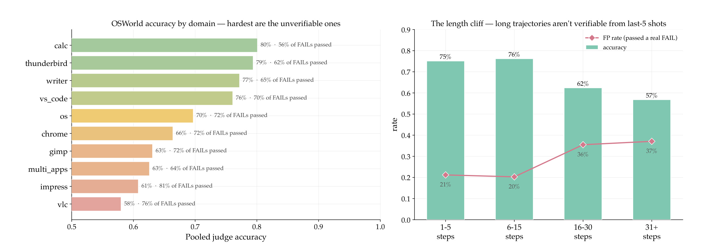
Figure 18 进一步解释 desktop 差距。左侧应用域中 calculator 的 pooled accuracy 约 80%，VLC 约 58%，且后者有约 76% 的真实失败被放过；Impress、multi-apps、GIMP 等需要核验最终工件的任务同样困难。右侧当轨迹从 1-5 步增长到 31 步以上，accuracy 从约 75-76% 降到 57%，false-positive rate 从 20-21% 升到 37%。默认只看最后五帧时，长轨迹的早期约束与中间失败不可见；全文字历史又容易把 agent 的自述当证据。因而 OS-Shepherd 虽提高 failure recall，仍没有解决长程环境状态压缩这一根本限制，也没有证明扩大末帧数量就能恢复被遗漏的关键状态。
4. 总结
OSReward 最重要的结论不是某个模型排第一，而是暴露了 reward 基础设施的共同失败方向：总体接近 90% 的 VLM judge 会在困难轨迹上跌到接近随机，并系统性把失败当成功；视觉设置的轻微变化不改变总体分数，动作和叙述文本却主导 verdict；多 judge 由于错误相关而难以靠投票修复。OS-Shepherd 则证明，利用高一致样本筛选、reasoning supervision 和针对 false-success 的两阶段训练，可以把小型开源 judge 从“几乎全接收”拉回较平衡区域，并把训练规模成本压到可承受范围。
当前版本至少有五项局限。第一，论文仍是 work in progress，benchmark、模型和代码后续版本可能变化。第二，1,019 条人工金标虽投入约 800 人时，但平台、应用和指令分布仍由作者的基础设施决定，不能代表全部真实企业桌面和私有系统。第三，Hard 多来自标注者分歧样本，会有效放大难例，却也可能偏向特定的可争议轨迹。第四，OS-Shepherd-100K 的自动标签来自一组强 judge；agreement filter 会提高精度，也会删除真正需要学习的罕见、分歧样本，并继承共同偏置。第五，外部评测以旧 benchmark verifier 为参照，而非统一人工重标，agreement 不是严格 ground-truth accuracy。第六，alignment/efficiency 仍接近弱基线，说明二分类去偏没有自动迁移到细粒度质量判断。
后续最值得做四类验证。其一，在公开代码与权重稳定后复现 Table 4 和 Figure 14，逐阶段保存 SFT、SFT+RL 在相同轨迹上的 verdict，确认 RL 增益不是阈值移动造成的表面改善。其二，建立按轨迹长度、应用域、早期关键证据位置分桶的回归集，测试增加事件摘要、关键帧检索或可执行终态检查能否修复 Figure 18 的长度断崖。其三，比较 hard vote、置信加权、选择性 abstain 与 learned router，利用 oracle 99.2% 与 majority 仅约 +1pp 的差距，研究“当前样本该信哪个 judge”。其四，在推荐/广告 Agent 的数据生产链上引入 failure-heavy shadow set，单独统计误奖失败动作的比率与下游策略放大效应，验证 OSReward 的 leniency 诊断是否跨任务成立。只有这些问题被回答，OS-Shepherd 才能从有力的开源基线成长为可托付训练闭环的 reward 服务。